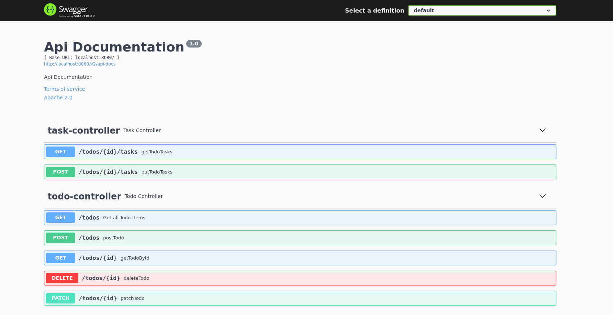

Walkthrough: SwaggerUI via SpringFox
In this walkthrough we will see how to enable Swagger UI for a Springboot API.
Concepts
Before we jump in let’s review some of the concepts.
Rest
Throughout this class you have written multiple RESTful APIs at various levels along the Rest Maturity Model.
The Rest Maturity Model in short:
- level 0: uses HTTP
- level 1: Resources separated by path
- level 2: Resource actions separated by path and method (endpoint)
- level 3: Hypermedia controls (HATEOAS)
We have used various Spring annotations to bring our RESTful APIs to fruition:
- @RestController
- @RequestMapping
- @GetMapping
- @PostMapping
- @PutMapping
- @DeleteMapping
- @PatchMapping
- @PathVariable
- @RequestBody
We have also used the Spring ResponseEntity quite extensively to control the HTTP Responses being returned from our RESTful API.
Our RESTful API persists data to a Postgres database through the use of Hibernate and JPARepository.
Finally we have controlled incoming HTTP request bodies and HTTP response bodies by building DTOs that represent the shape of the data.
OpenAPI
From the OpenAPI initiative’s Github readme:
The OpenAPI Specification (OAS) defines a standard, programming language-agnostic interface description for HTTP APIs, which allows both humans and computers to discover and understand the capabilities of a service without requiring access to source code, additional documentation, or inspection of network traffic.
The spec defines many things including:
- interactive documentation
- human and machine readable documentation
- documentation as source code
- code generation from documentation
Of course being a specification is not usable in actual projects, and a specification provider is necessary. This is where Swagger, and Springfox come in. They provide tools for implementing the OpenAPI spec.
Swagger
Swagger is predominately used for API documentation and discover-ability. It can be used for even more things which you can learn about from the Swagger website.
Swagger is quite popular and can be implemented with many different programming languages and application frameworks. It can even be configured in many different ways, to suit your teams workflow. Our example will show us how to use annotation driven configuration in a Spring boot project.
After Swagger has been added to and configured for our project it will provide interactive documentation for our RESTful API.

Walkthrough
For this walkthrough you will need a completed TodoTask API in spring.
You can use the one you created in this class. Or you can utilize the example repository.
note
You can find the full solution on the springfox-swagger branch.
Add Dependency
To start we need to add our springfox Dependency.
Open the build.gradle file and add the following line to the dependencies section:
implementation 'io.springfox:springfox-boot-starter:3.0.0'
If your IDE or Code Editor prompts you to reload the project, or update gradle, select yes.
Setup Swagger
Application Root
In TodoApplication.java, your project entry point you will need to add some code to configure Swagger UI.
First the @EnableSwagger2 annotation to the top of the TodoApplication class:
@SpringBootApplication
@EnableSwagger2
public class TodoApplication {
public static void main(String[] args) {
SpringApplication.run(TodoApplication.class, args);
}
Next up we need to add a bean and set our base API information:
public static void main(String[] args) {
SpringApplication.run(TodoApplication.class, args);
}
@Bean
public Docket todoApi() {
return new Docket(DocumentationType.SWAGGER_2)
.select()
.apis(RequestHandlerSelectors.any())
.paths(Predicate.not(PathSelectors.regex("/error.*")))
.build()
.apiInfo(todoApiInfo());
}
private ApiInfo todoApiInfo() {
return new ApiInfoBuilder()
.title("Todo Tasks API")
.description("An API for creating Todo items and associated subtasks")
.contact(new Contact("Paul Matthews", "paul@launchcode.org", "paul@launchcode.org"))
.license("MIT")
.licenseUrl("https://opensource.org/licenses/MIT")
.build();
}
Controller Updates
TodoController.java
First up is the TodoController.java:
@RestController
@RequestMapping(value = "/todos")
@Api(value = "Operations on Todo Items", produces = "application/json")
public class TodoController {
@Autowired
private TodoRepository todoRepository;
Now we need to configure each endpoint:
@ApiOperation(
value = "Get all Todo Items",
notes = "Returns a List of all Todo Items",
response = OutgoingTodoItem.class,
responseContainer = "List",
code = 200,
produces = "application/json"
)
@GetMapping
public ResponseEntity<Object> getTodos() {
@ApiOperation(
value = "Get Todo Item by ID",
notes = "Returns a Todo Item matching ID",
response = OutgoingTodoItem.class,
code = 200,
produces = "application/json"
)
@GetMapping(value = "/{id}")
public ResponseEntity<Object> getTodoById(@PathVariable int id) {
@ApiOperation(
value = "Create a Todo Item",
notes = "Creates a Todo Item using an incoming HTTP Request body",
response = OutgoingTodoItem.class,
code = 201,
produces = "application/json"
)
@PostMapping
public ResponseEntity<Object> postTodo(@RequestBody IncomingTodoItem todoDto) {
@ApiOperation(
value = "Update Todo Item",
notes = "Change a Todo Item completed property to true",
response = OutgoingTodoItem.class,
code = 200,
produces = "application/json"
)
@PatchMapping(value = "/{id}")
public ResponseEntity<Object> patchTodo(@PathVariable int id) {
@ApiOperation(
value = "Delete Todo Item",
notes = "Delete Todo Item that matches ID",
code = 204
)
@DeleteMapping(value = "/{id}")
public ResponseEntity<Object> deleteTodo(@PathVariable int id) {
TaskController.java
Next up is the TaskController.java:
@RestController
@RequestMapping(value = "/todos/{id}/tasks")
@Api(value = "Operations on a Todo Item's sub-tasks", produces = "application/json")
public class TaskController {
And each endpoint:
@ApiOperation(
value = "Get Todo Item's tasks",
notes = "Get a list of tasks associated with Todo Item matching ID",
response = TaskDto.class,
responseContainer = "List",
produces = "application/json"
)
@GetMapping
public ResponseEntity<Object> getTodoTasks(@PathVariable int id) {
@ApiOperation(
value = "Add a Task to a Todo Item",
notes = "Add a task to a Todo Item matching ID"
)
@PostMapping
public ResponseEntity<Object> putTodoTasks(@PathVariable int id, @RequestBody TaskDto taskDto) {
Model Updates
Swagger is smart enough to auto-detect the inputs, but it struggles a bit with the outputs because they are wrapped in ResponseEntities. Let’s ensure the OutgoingTodoItem model is discoverable.
@ApiModel
public class OutgoingTodoItem {
Access Swagger-UI
Launch the application with bootRun.
Make sure to start the docker containers first: docker-compose up -d
Then launch the application: ./gradlew bootRun -D DB_HOST=localhost -D DB_PORT=5444 -D DB_NAME=todo -D DB_USER=todo_user -D DB_PASS=todopass
Access the swagger docs in your browser at: localhost:8080/swagger-ui/index.html